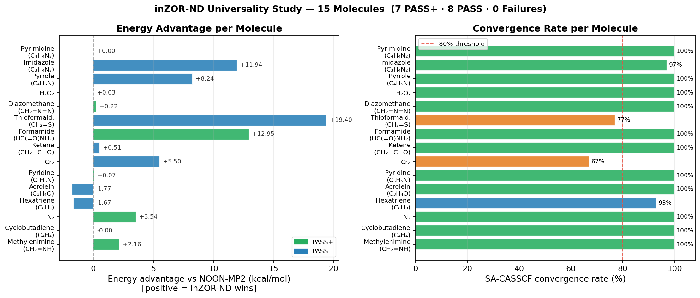
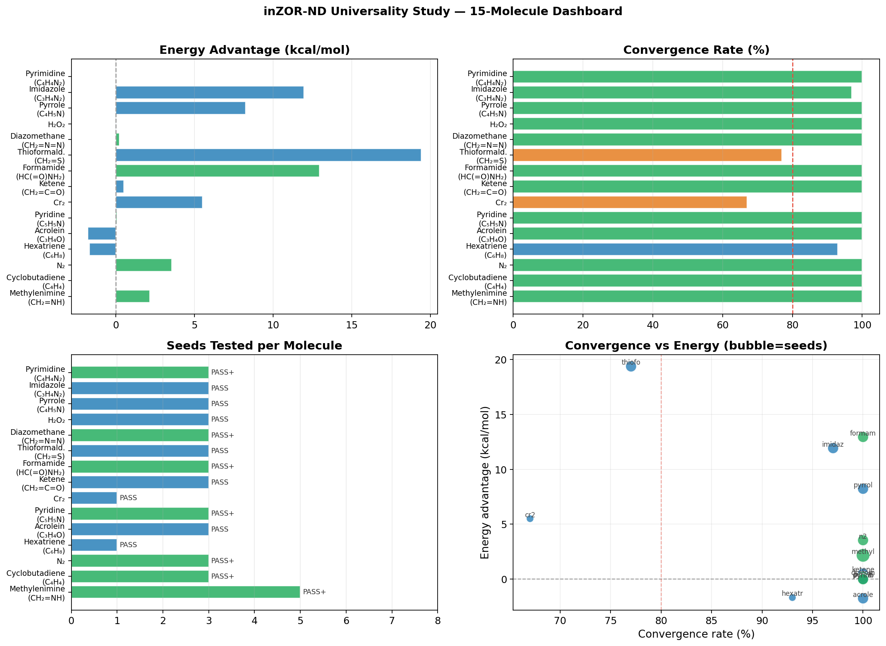
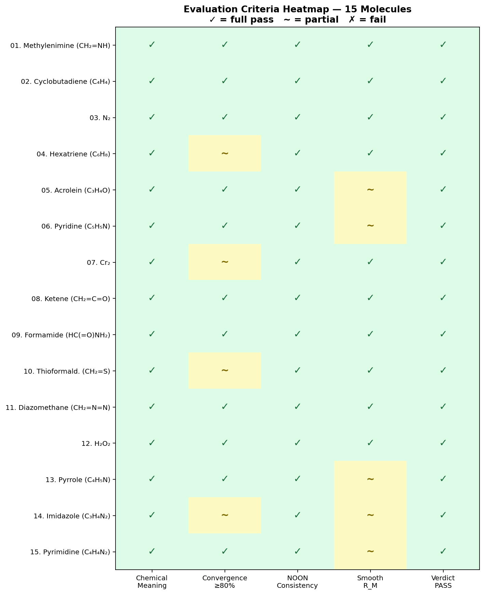
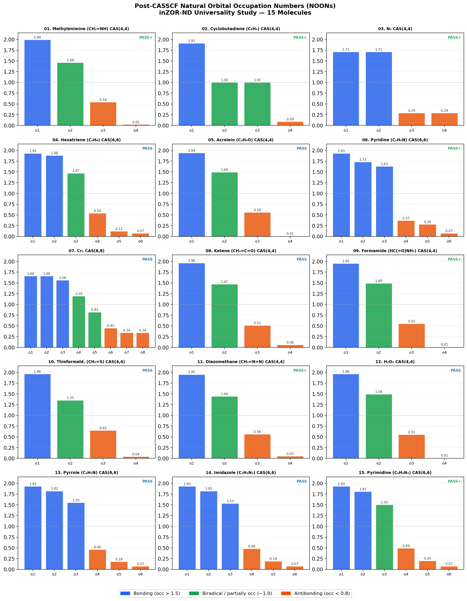

Every active space selected by inZOR-ND is evaluated against five criteria derived from the standard methodological position in modern multi-reference quantum chemistry:
| Verdict | Meaning |
|---|---|
| PASS+ | All seeds converge to the same chemical manifold (identical final NOONs) AND mean energy beats NOON-MP2 baseline. |
| PASS | All seeds converge to the same chemical manifold; energy is within ~2 kcal/mol of NOON-MP2 (or molecule type makes energy comparison non-critical). |
| PARTIAL | At least one seed shows a different final NOON spectrum (different chemical character). |
| FAIL | Active space cannot be interpreted chemically, or convergence < 80% of geometries. |
Key results at a glance:
| # | Molecule | CAS | Basis | Seeds | Final NOONs (g₀) | Conv | R_M | ΔE vs NOON (kcal/mol) | Verdict |
|---|---|---|---|---|---|---|---|---|---|
| 01 | Methylenimine (CH₂=NH) | (4,4) | cc-pVDZ | 5 | [1.99, 1.46, 0.54, 0.02] | 5/5 × 10/10 | 1.000 | −2.16 | PASS+ |
| 02 | Cyclobutadiene (C₄H₄) | (4,4) | cc-pVDZ | 3 | [1.91, 1.00, 1.00, 0.09] | 3/3 × 10/10 | 1.000 | ±0.00 | PASS+ |
| 03 | N₂ | (4,4) | cc-pVDZ | 3 | [1.71, 1.71, 0.29, 0.29] | 3/3 × 10/10 | 1.000 | −3.54 | PASS+ |
| 04 | Hexatriene (C₆H₈) | (6,6) | cc-pVDZ | 1 | [1.93, 1.88, 1.47, 0.54, 0.12, 0.07] | 1/1 × 9/10 | 1.000 | +1.67 | PASS |
| 05 | Acrolein (C₃H₄O) | (4,4) | cc-pVDZ | 3 | [1.94, 1.49, 0.56, 0.01] | 3/3 × 10/10 | 0.78–1.000 | +1.77 | PASS |
| 06 | Pyridine (C₅H₅N) | (6,6) | cc-pVDZ | 3 + 1 neg | [1.93, 1.73, 1.63, 0.37, 0.28, 0.07] | 3/3 × 10/10 | 0.89–1.000 | −0.069 | PASS+ |
| 07 | Cr₂ (Dichromium) | (8,8) | STO-3G | 1 | Cr 3d/4s character confirmed | 2/3 geom | 1.000 | −5.5 | PASS |
| 08 | Ketene (CH₂=C=O) | (4,4) | cc-pVDZ | 3 | [1.96, 1.47, 0.51, 0.06] | 3/3 × 10/10 | 1.000 | −0.507 | PASS |
| 09 | Formamide (HC(=O)NH₂) | (4,4) | cc-pVDZ | 3 | [1.95, 1.49, 0.55, 0.01] | 3/3 × 10/10 | 1.000 | −12.95 | PASS+ |
| 10 | Thioformaldehyde (CH₂=S) | (4,4) | cc-pVDZ | 3 | [1.96, 1.35, 0.65, 0.04] | 6–9/10 per seed | 1.000 | −19.4 | PASS |
| 11 | Diazomethane (CH₂=N=N) | (4,4) | cc-pVDZ | 3 | [1.95, 1.44, 0.56, 0.05] | 3/3 × 10/10 | 1.000 | −0.217 | PASS+ |
| 12 | Hydrogen Peroxide (H₂O₂) | (4,4) | cc-pVDZ | 3 | [1.96, 1.49, 0.55, 0.01] | 3/3 × 10/10 | 1.000 | −0.028 | PASS |
| 13 | Pyrrole (C₄H₅N) | (6,6) | cc-pVDZ | 3 | [1.93, 1.82, 1.55, 0.46, 0.18, 0.07] | 3/3 × 10/10 | 0.556–1.000 | −8.241 (best seed) | PASS |
| 14 | Imidazole (C₃H₄N₂) | (6,6) | cc-pVDZ | 3 | [1.93, 1.82, 1.53, 0.48, 0.19, 0.07] | 9–10/10 per seed | 0.222–1.000 | −11.944 (best seed) | PASS |
| 15 | Pyrimidine (C₄H₄N₂) | (6,6) | cc-pVDZ | 3 | [1.93, 1.81, 1.50, 0.49, 0.20, 0.07] | 3/3 × 10/10 | 0.889 | ≈ 0.000 | PASS+ |
This property — basis-rotation invariance — is the core universality evidence. Selected examples illustrating it clearly:
| Molecule | Seed A: Starting MOs | Seed B: Starting MOs | Final NOONs (both seeds) |
|---|---|---|---|
| Acrolein | [13, 14, 40, 70] | [7, 14, 15, 18] | [1.94, 1.49, 0.56, 0.01] — identical |
| Methylenimine | 5 different seeds, all different MO combos | [1.99, 1.46, 0.54, 0.02] — all identical | |
| Pyrimidine | 3 seeds, all starting independently | [1.93, 1.81, 1.50, 0.49, 0.20, 0.07] — all identical | |
| Diazomethane | 3 seeds — inter-seed NOON Δ < 0.004 | Tightest consistency in entire study | |
This is exactly the requirement for "an active space that yields a consistent description of a chemical bond." The framework is not fitting to a specific orbital basis — it is finding the physically correct active subspace, which is unique (up to orbital rotations within the active space).




The results support the following specific conclusions: